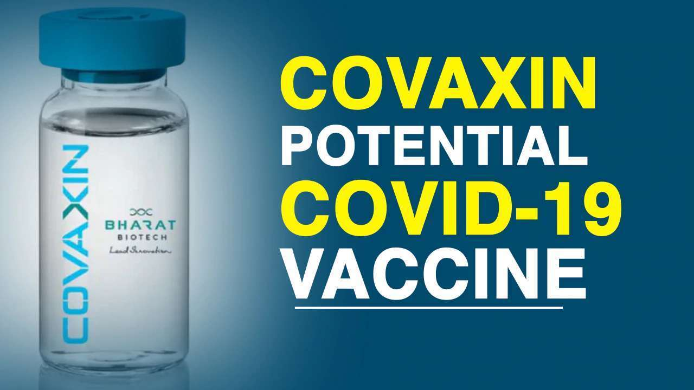
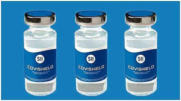

How does the vaccine Work?
COVID-19 vaccines help our bodies develop immunity to the virus that causes COVID-19 without us having to get the illness. Different types of vaccines work in different ways to offer protection, but with all types of vaccines, the body is left with a supply of “memory” T-lymphocytes as well as B-lymphocytes that will remember how to fight that virus in the future.
It typically takes a few weeks for the body to produce T-lymphocytes and B-lymphocytes after vaccination. Therefore, it is possible that a person could be infected with the virus that causes COVID-19 just before or just after vaccination and then get sick because the vaccine did not have enough time to provide protection.
Sometimes after vaccination, the process of building immunity can cause symptoms, such as fever. These symptoms are normal and are a sign that the body is building immunity.
Most COVID-19 Vaccines Require More Than One Shot
Myths About Vaccine
-
Natural immunity is better than vaccine-acquired immunity. A vaccine may weaken the immune system.
Vaccines stimulate the immune system to produce an immune response similar to natural infection, it does not weaken or overload the immune system in any way. If you wanted to gain immunity to measles by contracting the disease, you would face a 1 in 500 chance of death from your symptoms. In contrast, the number of people who have had severe allergic reactions from a measles vaccine is less than one in a million.
-
Vaccinations cause the diseases that they are meant to prevent.
Vaccines 'mimic' the diseases they prevent. The process of producing antibodies can sometimes cause a low fever or minor swelling, but not the actual diseases.
-
Vaccines contain unsafe toxins.
t's true that vaccines do contain trace amounts of formaldehyde, mercury and aluminium as an adjuvant but in quantities, that's safe for children.
-
Not vaccinating my child affects only my child.
Herd immunity means having a high enough percentage of people in a population who are immune from a disease that there are few susceptible people left to infect. But when a population dips below that amount of vaccinated people needed to prevent an illness from spreading, a disease that was nearly eradicated can resurface with a vengeance — spreading quickly and threatening many lives.
Not getting vaccinated is like failing to stop at a four-way intersection, if three people stop and one doesn't, the risk of an accident is relatively small. If two or three people don't stop, the risk is much higher to everyone at the intersection.
-
If you've had Covid-19 already, you don't need to get vaccinated.
While a previous coronavirus infection might provide people with antibodies against reinfection, experts are not yet sure how long this protection lasts.
Centre for Disease Control and Prevention (CDC) suggests “people may be advised to get a Covid-19 vaccine even if they have been sick with Covid-19 before”.
About vaccines in India
Covaxin
COVAXIN®, India's indigenous COVID-19 vaccine by Bharat Biotech is developed in collaboration with the Indian Council of Medical Research (ICMR) - National Institute of Virology (NIV).
The indigenous, inactivated vaccine is developed and manufactured in Bharat Biotech's BSL-3 (Bio-Safety Level 3) high containment facility.
The vaccine is developed using Whole-Virion Inactivated Vero Cell derived platform technology. Inactivated vaccines do not replicate and are therefore unlikely to revert and cause pathological effects. They contain dead virus, incapable of infecting people but still able to instruct the immune system to mount a defensive reaction against an infection.
Key attributes
- COVAXIN® is included along with immune-potentiators, also known as vaccine adjuvants, which are added to the vaccine to increase and boost its immunogenicity.
- It is a 2-dose vaccination regimen given 28 days apart.
- It is a vaccine with no sub-zero storage, no reconstitution requirement, and ready to use liquid presentation in multi-dose vials, stable at 2-8°C.
- Pre-clinical studies: Demonstrated strong immunogenicity and protective efficacy in animal challenge studies conducted in hamsters & non-human primates. For more information about our animal study, please visit our blog page on Non-Human Primates.
- The vaccine received DCGI approval for Phase I & II Human Clinical Trials in July, 2020.
- A total of 375 subjects have been enrolled in the Phase 1 study and generated excellent safety data without any reactogenicity. Vaccine-induced neutralizing antibody titers were observed with two divergent SARS-CoV-2 strains. Percentage of all the side-effects combined was only 15% in vaccine recipients. For further information, visit our blog page on phase 1 study.
- In Phase 2 study, 380 participants of 12-65 years were enrolled. COVAXIN® led to tolerable safety outcomes and enhanced humoral and cell-mediated immune responses. Know more about our phase 2 study.
- Phase 3 multi-centre trial: The first dose of vaccination has been given to all the participants and presently, second dose of either vaccine/placebo is being administered.
- Efficacy is estimated by the incidence of COVID-19 cases accrual between the vaccine and the placebo group, which will commence two weeks after the second dose.
- The interim efficacy estimate will be generated by the end of Feb, 2021.
- COVAXIN® has been granted approval for emergency restricted use in India by DCGI-CDSCO on Jan 03, 2021.
Covishield
The vaccine, which is known as Covishield, is made from a weakened version of a common cold virus (known as an adenovirus) from chimpanzees. It has been modified to look more like coronavirus - although it can't cause illness
When the vaccine is injected into a patient, it prompts the immune system to start making antibodies and primes it to attack any coronavirus infection.
The jab is administered in two doses given between four and 12 weeks apart. It can be safely stored at temperatures of 2C to 8C, about the same as a domestic refrigerator, and can be delivered in existing health care settings such as doctors' surgeries.
This makes it easier to distribute than some of the other vaccines.
The jab developed by Pfizer-BioNTech, which is currently being administered in several countries, must be stored at -70C and can only be moved a limited number of times - a particular challenge in India, where summer temperatures can reach 50C.
How effective is Covishield?
International clinical trials of the Oxford-AstraZeneca vaccine showed that when people were given a half dose and then a full dose, effectiveness hit 90%.
But there was not enough clear data to approve the half-dose, full-dose idea.
However, unpublished data suggests that leaving a longer gap between the first and second doses increases the overall effectiveness of the jab - in a sub-group given the vaccine this way it was found to be 70% effective after the first dose.